Trening 60+ – sterk videre
For kvinner og menn. Det er aldri for sent å bli sterkere. Muskler, balanse og kondisjon kan trenes i 60-, 70-, 80- og 90-årene, og fremgangen gjør hverdagen lettere og tryggere.
For kvinner og menn. Det er aldri for sent å bli sterkere. Muskler, balanse og kondisjon kan trenes i 60-, 70-, 80- og 90-årene, og fremgangen gjør hverdagen lettere og tryggere.
Alderen er bare et utgangspunkt. Velg det som passer best med hvordan kroppen din fungerer i dag, ikke bare med tallet på fødselsattesten.
Trening 60+ – sterk videre
Du er kanskje i full aktivitet, eller du har nettopp sluttet å jobbe og har mer tid. Nå er et godt tidspunkt å bygge opp musklene. Det du bygger nå, har du glede av i mange år.
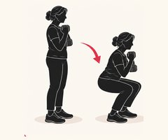
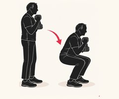
KnebøyMed manual foran brystet, eller ned til en stol eller benk.8–12 rep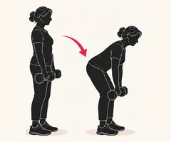
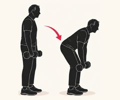
Rumensk markløft med manualerBøy i hoftene med rett rygg, og skyv hoftene frem på vei opp.8–12 rep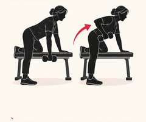
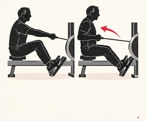
RoingI apparat, med manual og støtte på benk, eller med strikk.8–12 rep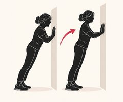
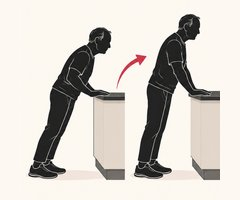
Push-ups mot benk eller brystpressJo lavere hendene er, jo tyngre blir det.8–12 rep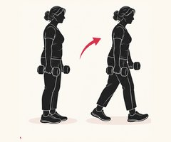
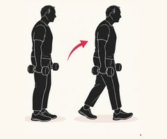
Farmer’s walkGå rolig med en tung vekt i hver hånd, rak rygg. Godt for grep, hofter og balanse.30–40 m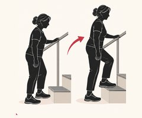
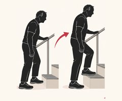
Step-up på trinn eller kasseGjerne med manualer. Hold i et rekkverk om du trenger det.8–10 per bein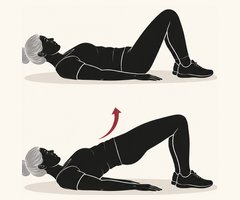
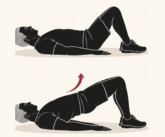
Seteløft eller hip thrust10–15 rep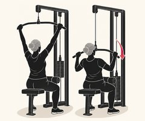
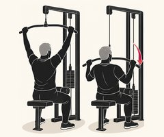
Nedtrekk i apparat eller med strikk8–12 rep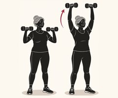
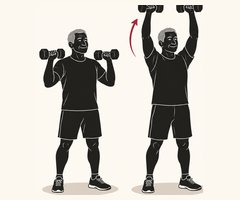
Skulderpress med manualerSittende eller stående.8–12 rep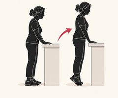
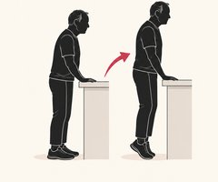
TåhevPå en trappekant, med støtte for balansen.12–15 rep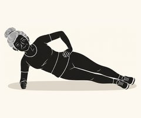
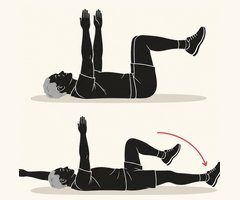
Sideplanke eller dead bug20–30 sekTren kraft også. Løft raskt og kontrollert opp, og senk rolig. Evnen til å bruke kraft raskt svekkes enda tidligere enn styrken, og det er den du trenger når du skal ta deg for et snubletrinn.
Skjelettet liker støt. Er du frisk og uten skader, kan du legge inn noen små hopp eller hælslipp: stå på tærne og slipp deg ned på hælene, 10–20 ganger, et par dager i uka.
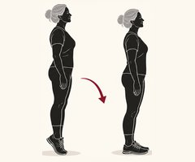
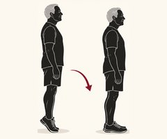
HælslippGå opp på tærne og slipp deg ned på hælene med et lite dunk.10–20 repTrening 70+ – styrke, balanse og trygghet
Nå blir balansen like viktig som styrken. Trening som kombinerer styrke og balanse er det som best forebygger fall, og den gjør deg tryggere i hverdagen: i trapper, på glatt føre og når du bærer noe.
2 sett per øvelse. Velg en vekt eller variant der de siste repetisjonene kjennes tunge, men teknikken fortsatt er god.
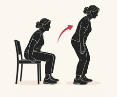
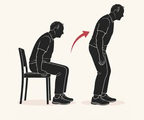
Reis deg fra stolUten å bruke armene hvis du kan. For mer: hold en vekt, eller bruk en lavere stol.8–12 rep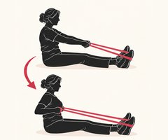
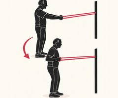
Roing med strikkStrikk festet i døra, eller manual med støtte på en stol.10–15 rep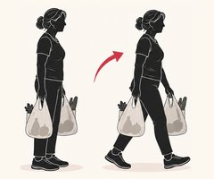
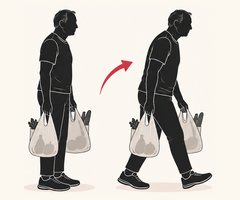
Bær handleposer eller vekterGå rolig med lik vekt i hver hånd.30 mStå ved en kjøkkenbenk eller en stødig stol, slik at du alltid har noe å ta tak i. Balansen må utfordres litt for å bli bedre, men trygt.
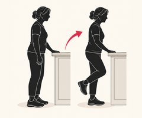
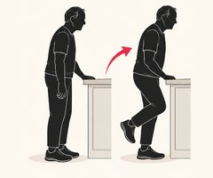
Stå på ett beinMed en hånd på benken. Slipp taket litt når det går greit.10–30 sek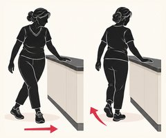
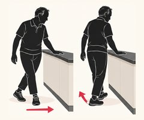
Gå sidelengs og baklengsLangs benken, med en hånd på benkeplata.10 skritt hver veiNår dette blir lett: lukk øynene et øyeblikk, stå på en pute, eller snu hodet mens du står.
Trening 80+ – bevegelse, funksjon og selvstendighet
Målet er å klare hverdagen selv: reise seg, gå i trapper, handle, bære og komme seg opp fra gulvet. Musklene svarer på trening også nå. Selv i 90-årene kan styrketrening gi tydelig fremgang i løpet av få uker.
1–2 sett per øvelse. Bruk en stødig stol uten hjul, gjerne med armlener, og ha kjøkkenbenken i nærheten.
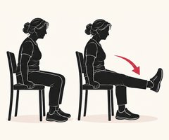
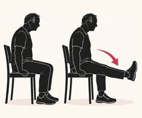
Strekk kneet sittendeStrekk ett bein frem, hold litt, senk rolig. Vektmansjett for mer.10 per bein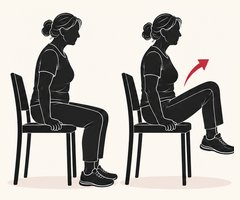
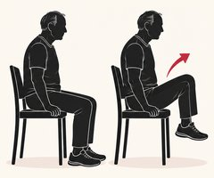
Marsj sittendeLøft knærne vekselvis.20–30 sek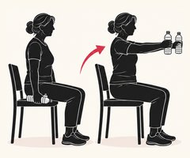
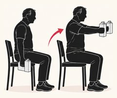
Armhev med lette vekterMelkekartonger eller vannflasker fungerer fint.8–12 repØv på å komme deg opp fra gulvet mens du har noen hos deg: over på siden, opp på knærne, og opp ved hjelp av en stol. Det gir trygghet å vite at du klarer det.
Mange kommuner har hverdagsrehabilitering, trimgrupper eller programmet Sterk og stødig. Spør fastlegen, fysioterapeut eller kommunen. Det er lettere å holde det gående sammen med andre.
Etter 60 er rådene om trening nesten like for kvinner og menn. Begge mister muskelmasse, styrke og kraft hvis de ikke trener, og begge får bedre funksjon av å trene.
Etter overgangsalderen faller beintettheten raskere. Tung styrketrening og støt, som hopp og hælslipp, er det som best styrker skjelettet. I LIFTMOR-studien trente kvinner med lav beintetthet tung styrke under veiledning, og de fikk både sterkere skjelett og bedre funksjon uten flere skader.
Menn får også benskjørhet, bare noe senere. Omtrent én av fem menn over 50 vil få et brudd på grunn av benskjørhet. Menn mister også mer muskelmasse i absolutte tall, og trenger derfor styrketrening like mye.
Forskning: LIFTMOR (Watson mfl. 2018)
God kondisjon gjør hverdagen lettere og henger sterkt sammen med god helse og lang levetid.
Rask gange er den enkleste kondisjonstreningen. Gå i et tempo der du blir litt andpusten, men fortsatt kan snakke.
Intervaller passer også senere i livet. I den norske Generasjon 100-studien trente 70–77-åringer blant annet 4 × 4 minutter, med 3 minutter rolig mellom dragene. Det var trygt, og de som trente intervaller hadde best kondisjon etter fem år.
Start rolig hvis du er utrent, og øk gradvis.
Forskning: Generasjon 100 (Stensvold mfl., BMJ 2020)
Tester gir deg et utgangspunkt, og gjør det lettere å se at du blir bedre. Ta dem igjen etter 8–12 uker.